Welcome to my little corner of the internet. I work at Geodan Research as a UxDesigner/tinkerer and at the World Bank on rural accessibility mapping. During the years I've done all kinds of fun stuff and this site is an attempt to collect the most interesting ones. All the projects listed here are either built or designed by me. You are free to use and extend them, though it would be nice if you let me know if you do something nice with it. I tend to work on the edge of (browser-) technology, as such it is recommended to use Chrome or Firefox, though the videos should be fine for everyone. Click on the pictures for the goodies.
-= 2017 =-
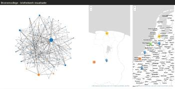
bronnen flow
Small application created in an evening: A google spreadsheets based application for history students at Leiden University to visualise the networks in 17th-century letters. Students read the letters and try to find out where it is written and to whom it is addressed. They can than enter the writer, the recipient, the various locations and other information in one collective spreadsheet. The application will then automatically create two maps with origins and destinations and a social network graph. The main aim for the application is to teach students to organise their data in a way computers can work with it.
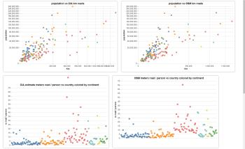
road estimator
Ongoing project to come up with a generic way to guestimate the road coverage in OSM for any given country, without the use of reference data. It builds upon the work MapBox did on the completeness of OpenStreetMap. Currently it contains a series of Vega graphs exploring the differences between CIA world factbook road numbers and OSM road distances.
-= 2016 =-
rural accessibility map
For the World Bank I have developed a tool to assess the accessibility of rural populations in relation to critical services. Using the Open Source Routing Machine, it calculates travel times from population centers to the nearest POI. World Bank staff can adjust road parameters to quantify the effect of road improvements as percentages of the population that can reach critical services n minutes faster.
The application is open source and can be found on GitHub. Curently the brilliant folks at Development Seed are improving the frontend and deploymet tools for Rural Accessibility Map.
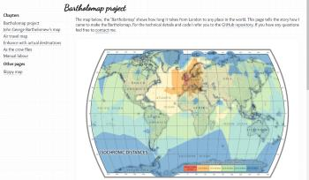
bartholomap
Project page for a 21st century version of John Bartholomew's 1914 map with isochrones from London. Using open data like OpenStreetMap and OpenFlights and open source tools like OSRM and QGIS I calculated how long it would take a modern day person to travel from London to 7000 places around the globe. Based on that information I created a modern day isochrone map. The page explains the various steps I took to get to this map.
-= 2015 =-
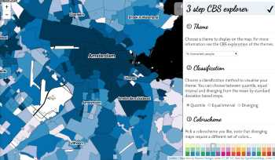
cbs explorer
Census data have been available for the Netherlands for a very long time now and they are typically visualised as choropleth maps. However, from an educational point of view just showing the choropleth doesn't teach students much about the options the cartographer has and the effects of the choices on the final map. The CBS-explorer is an exploration in cartography education. Using vector tiles and a large attribute table one is able to choose how to visualize an attribute as a choropleth and have instant results.
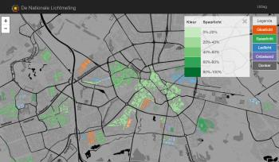
lichtproject
In November high school kids went out on the streets to measure the type of lights used in houses in their neighborhood using a home made spectrometer. They would then uplaod these measurements on the lichtproject website and all these measurements are displayed on the map. By using vector tiles for the geometries and a custom aggregating tsv engine it was possible to show the most recent measurements on all zoom levels. Because it was unknown which lightbulb would be most common we devised a flexible cartography which allows for any type of light to take precedence or be removed from the map.
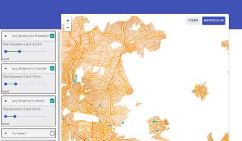
cbs vector tiles
For the PICO project I'm building a viewer where the user can filter on specific attributes to help him to find the area best suited for their needs or capabilities. At the moment this is done using CQL filters in Geoserver. However with the release of the mapbox vector tiling spec a range of software tools have arrived that make it at least interesting to try to do this entirely clientside. This application is an exploration on filter-interfaces; using the filter interface paradigm of webshops "show only the products that fit the search criteria, by dragging some sliders" and translate it to a map. Hopefully this will provide the user with powerful, yet easy to understand filter interfaces and finally allow the burial of the Query builder. For instance if you filter for 'avg distance to hospital' between 0 and 5 km it will blank out the areas more than 5km from the hospital and show the neighbourhoods that fit the criteria.
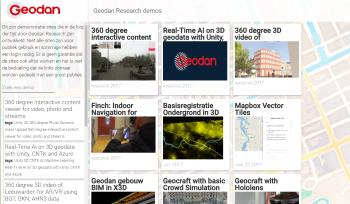
geodan research demosite
Part of the job description of working by Geodan Research is providing the rest of the company with cool demos. We have collected quite a few over the years but they were not easy to find, only if you knew the URL you could access them. To make things easier for everyone I created a simple polymer based website where everyone could add demo's by modifying the configuration. The whole thing is searchable using tags included in the configuration.
-= 2014 =-
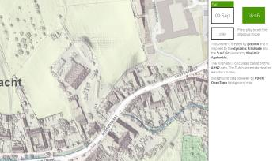
dynamic Holland shading
In 2014 the complete detailed height model (AHN2) of the Netherlands was released as open data. The data was collected for the government body's in charge of keeping our feet dry. To show that you can use the data for different purposes I created this viewer. It is based on the interactive height viewer and Vladimir Agafonkin's hillshade and suncalc viewers.
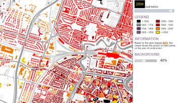
interactive city growth
An updated version of the interactive BAG viewer I created in 2012. It uses specially encoded PNG tiles, where each colour represents the year of construction of the building. Apart from some visual restyling the main difference is that this one now uses webworkers to render the buildings.
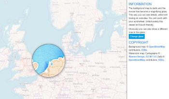
localzoom with ol3
We had a discussion at work on the understandability of maps; if you want to compare different cities in Europe you want to view them all in a map, however the Benelux and neighboring Ruhrgebiet are very crowded with cities so you can't distuingish them properly. The classic solution is to zoom in on the map, but you will lose the overview. I proposed a 'localzoom' magnify glass which allows you to zoom in at a particular area without losing oversight.
-= 2013 =-
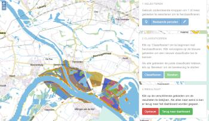
reclassification application
This is a proof of concept for a planning and modelling tool for ecology-management. The riverplains have various ecotypes and they have different impacts on the flow and throughput of the river. The university of Wageningen developed a model which would calculate the development of a plot depending on the current vegetation, distance from the river, soil type etc. This way you could predict the vegetation type in 5 years and the effect on the river capacity. A site manager can use this tool to quickly assess the impact of a management-change. unfortunately some services are gone noawadays
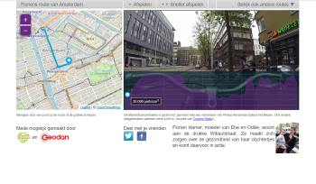
rochelroutes
For the dutch environmental organisation milieudefensie asked for a multimedia website where people could see the impact of various motorised vehicles during a cycletour through different cities. They equiped bicycles with a GPS tracker, a video camera and a device to measure ultra fine particulates in the air. By combining the map with the route, the graph of the particulates concentration and the video the visitor can see where the spikes in the concentration are and what the probable cause is.
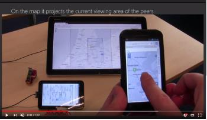
multi user editing
Tom and I developed COW as a tool for real time multi-user (geo) data sharing in an environment with intermittent network access (think mobile devices in the field). I created this video to show how COW would work with Phoenix and more in general what you could do with COW. COW is a pure browser solution using websockets and indexeddb and is at the hart of the crisis management application Eagle Water.
-= 2012 =-
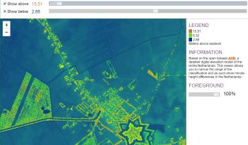
interactive height viewer
In 2011 I recieved the digital elevation model of the Netherlands, both version 1 and the first batches of version 2. I had already used Leaflets canvas implementation to build the iBAG viewer and I figured that a similar approach could be used to build a highly dynamic height model viewer. The Netherlands might appear to be flat, but if you measure accurately enough even a 'pooltable' has hills. However, these centimeter-differences are difficult to visualise if you also have to take into account the 300m+ height difference overall. Allowing the user to set his own classification makes it possible to visualise the minute difference in an agricultural field that have impact on the crop-growth.
This viewer is a slightly more modern version of the 2012 one: using webworkers and the 50cm AHN2 data that has since become open data.
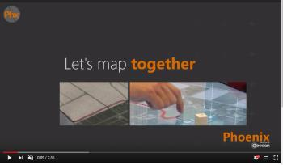
phoenix touchtable application
Ever since I started at Geodan Research we've been working with 'touchtables' in their different inceptions. The various tables, experiments and applications resulted in Phoenix, an application that allows for a multi-person, single display discussion on a map. Initially meant as a tool for spatial planning discussions with stakeholders, it has become a popular platform to show and discuss (the power of) geo information. I've designed the interaction model and the interface of the application and shot and edited this movie.

dymaxion wall map
I wanted a wall map of the world which would show the world in a new light. I came across the dymaxion projection and Schuyler's Geo::Dymaxion library. I transformed Natural Earth Data into geojson with QGIS and ran the geojson through a custom script to dymaxify it and load it back into QGIS, made a rough layout exported it to SVG and used Inkscape to create a full size wall map complete with seamonsters.
-= 2011 =-
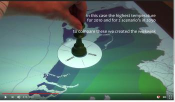
tangible scenario interface
In 2005 Geodan co-developed a TangiTable; a table mounted projector and sensor array that allowed users to physically interact with a digital map on a table. Though not very portable it was a nice experimentation platform for touch based map-interfaces. In 2006 we received the MERL DiamondTouch which was way more portable and easier to develop for. Then in 2008 we received the Microsoft Surface (the table, not the tablet). An all-in-one touchtable with object recognition. This was the platform where we started to develop SchetsGIS and later Phoenix. The video shows an interface to quickly compare scenarios of climate models using this object recognition. I both designed the interface and shot the video.
-= 2010 =-
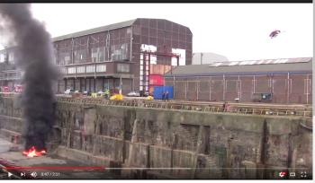
firefly exercise
With the rise of cheap, easy to control small helicopters the idea arose to use a drone to assist firefighters in the forest. We used a petrol powered helicopter by Delft Dynamics which provided a stable camera platform for up to an hour between refueling. The camera feed was streamed to the eagle crisismanagement system and georectified to overlay on a map. This way the commander could locate its trucks and determine the way the fire was developing. This movie was shot during a fire-exercise in the Amsterdam harbour.
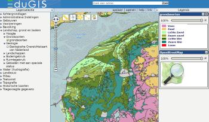
EduGIS: highschool webgis
In 2004 high quality geographic data of their surroundings were hard to come by for highschools in the Netherlands, though GIS became increasingly more important in their curriculum. The Dutch Cadastre together with the Free University in Amsterdam asked Geodan to develop a web application for highschools were they would donate high quality geo-data that would be freely available for highschools. Very quickly it was discovered that traditional webgis platforms were not capapable of delevering the performance needed to satisfy classrooms full of impatient students. I worked together with various people form the OSGeo community to develop a tiling standard and software which could be used to create a high performance webGIS on a shoestring budget. In 2010 the original viewer was replaced with this one utilising the then modern software stacks.
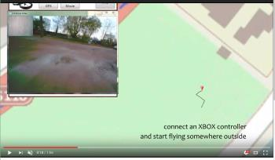
remote sensing by drone
A quick movie to show how low-cost drones can be used for real-time remote sensing and aerial mapping. Being a small and cheap drone which could be operated indoor, this setup was used in exhibitions and conferences to show how the firefly setup could work.
-= 2009 =-
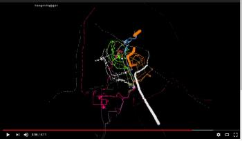
gps tracks animation
An animation created with processing using the GPS tracks of various colleagues. It shows their daily commute to work and through that the streets of Amsterdam and a few railways to various places in the Netherlands. The main purpose of this movie was to introduce the GPS tracker at the christmas meeting where it was handed out to everyone.
-= 2008 =-
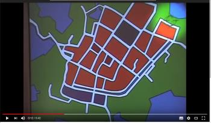
wiion the game
The Wii and especially the wiimote allowed us to play with different human-computer interaction methods. It was fun, though tiresome, to use the wiimote to interact with geodata. When Geodan launched the WION system we were asked to come up with a crowd-puller at an major exhibition. I designed the game, where the user had to search for leaks in the underground network of pipes using the wiimote, dig it up and fix the leak.